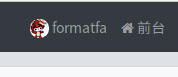

关于我
一个98年的出生的,暂时有点自闭的老司机
IT方面
下面的有接触过,不过一般，且忘了很多。。。
- 安卓方面,开发,逆向等
- Python 方面,爬虫之类的
- 大数据方面,Hadoop,Spark这些
- 前端,JavaScript, VueJS,NodeJS(这个不知道算不算)
- Java,不过spring那些没学过。。。。
- Linux 方面
性格爱好等
- 自闭儿童写了后又决定删了
社交帐号联系
大多数平台我都是在潜水的，哈哈,暂时想起这么多
用修罗源码搭建的论坛
我的网名？
平台注册时用户名是习惯用格式化法 ，来源是…….当年乱打出来的. 初中时在斯凯网想一个用户名时,最后决定用输入法,乱敲,最后敲出格式化三个字，后面再加个自己的不知道是什么的法字,然后就一直用了.
百度帐号为百鬼_格式化法,现在看起来有点中二，因为当时在看滑头鬼之孙,受里面的百鬼夜行影响…..
FormatFa则是直接翻译，哈哈哈。
但这个名字也感觉有点那个啥,然后想直接用自己本名弄个弄个英文名,一开始想是coffe之类的,最后是JetFlyLiang读音有点像,这个Jet说实话是那时看《海贼王》里路飞的二档的技能Jet 手枪二档